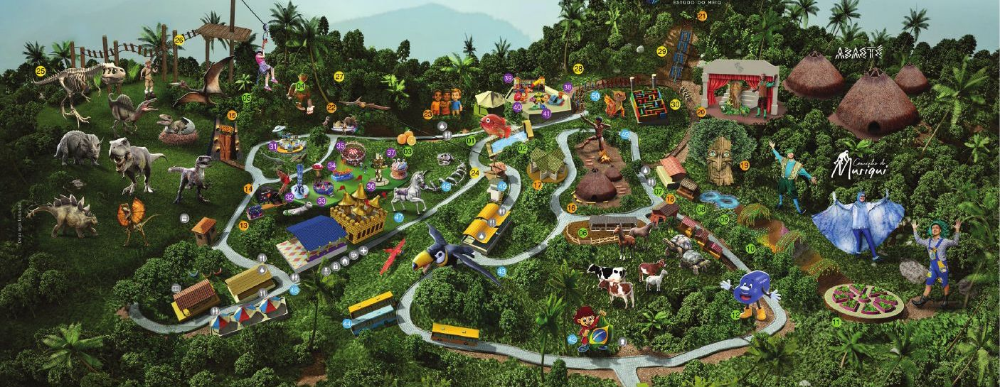

Café da manhã
Por volta das 09h15
- Pão de forma com queijo e presunto
- Bolacha doce
- Fruta
- Bolo
- Suco e achocolatado
Passeio escolar · segunda-feira, 19 de outubro de 2026
Saint Mary's School × Vem com a Gente Viagens
Passeio guiado por monitores bilíngues do parque.
Um dia de atividades e muita diversão. Os horários são aproximados e podem variar com o trânsito e o ritmo de cada grupo.
Alunos e monitores se encontram na escola para a conferência e o embarque.
Viagem de ônibus até o parque. Ponto de saída: R. Euclides da Cunha, 241, Pompeia, Santos.
Recepção, divisão em grupos e orientações de segurança.
Servido no parque. Veja o cardápio.
Rodízio entre atividades pedagógicas e brinquedos, guiado por monitores bilíngues do parque e respeitando a faixa etária de cada turma.
Servido no parque. Veja o cardápio.
Segunda etapa do rodízio entre atividades e brinquedos.
Servido no parque. Veja o cardápio.
Encerramento das atividades e dos brinquedos.
Banheiro, contagem de alunos e embarque no ônibus.
Saída do parque rumo a Santos.
Desembarque na Saint Mary's School.
Cada brinquedo tem sua própria indicação de idade ou série. Escolha a turma para destacar o que ela pode usar.
Na Educação Infantil, alguns brinquedos pedem idade mínima de 4 ou 5 anos. Confira a idade de cada criança.
As atividades pedagógicas e recreativas do parque estão alinhadas à BNCC e aos Objetivos de Desenvolvimento Sustentável (ODS).
Os números dos brinquedos nos cartões acima correspondem aos números do mapa.

No celular, deslize o mapa para os lados para ver o parque inteiro.
Um dia inteiro ao ar livre pede preparo. Marque o que já está na mochila.
Sugestões gerais. Siga também as orientações da Saint Mary's School.